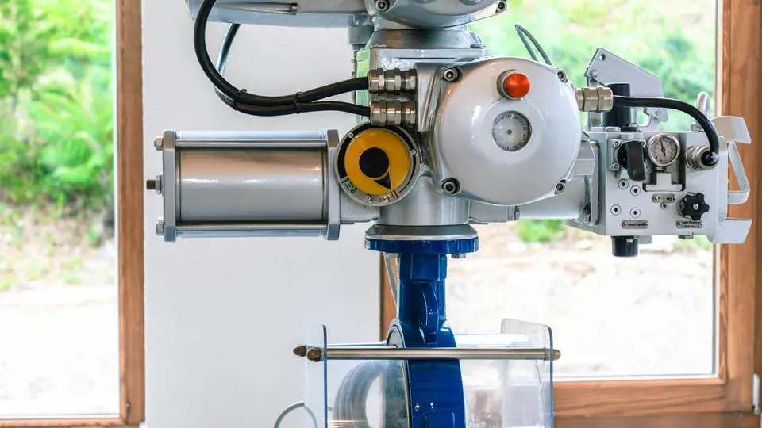

Calculadora de Calibração de Válvula de Controle
Conteúdo técnico: ALOGY Engenharia · Atualizado em: 21/07/2026
Calcule sinal 4-20 mA, abertura esperada, curso da haste, referência pneumática 3-15 psi, erro de posição e status por tolerância para apoio em calibração, teste de curso e comissionamento de válvulas de controle.

Ferramenta para apoio técnico
Use como conferência e preparação de campo. A calibração real depende do tipo de válvula, posicionador, atuador, sentido de ação, falha segura, alimentação pneumática, histerese, atrito, estanqueidade, intertravamentos e procedimento aprovado. Não substitui calibração formal, laudo, ART ou validação por profissional habilitado.
Dados da válvula
Informe o ponto aplicado e a posição real medida, quando houver. A ferramenta compara o esperado com o real e mostra aprovação pela tolerância definida.
Resultado
Tabela de pontos recomendados
Use os pontos abaixo como referência inicial para teste de curso e registro de calibração. Em campo, registre também subida e descida para verificar histerese.
| Ponto | Sinal | Abertura direta | Abertura reversa | Curso direto | 3-15 psi |
|---|
Cuidados práticos
- Confirme se a válvula é ar-para-abrir ou ar-para-fechar.
- Valide a falha segura antes de liberar a malha.
- Confira se o posicionador está em ação direta ou reversa conforme o projeto.
- Faça teste em subida e descida para observar histerese e agarramento.
- Registre sinal aplicado, posição real, desvio e condição da alimentação pneumática.
Perguntas rápidas
Quais pontos testar?
O padrão mais comum é 0%, 25%, 50%, 75% e 100%, equivalentes a 4, 8, 12, 16 e 20 mA em uma malha linear.
O que é histerese?
É a diferença entre a posição da válvula quando o ponto é alcançado subindo e quando o mesmo ponto é alcançado descendo. Pode indicar atrito, folga ou problema no conjunto.
Serve para válvula on/off?
Não é a aplicação principal. Esta ferramenta é voltada para válvulas modulantes de controle com sinal proporcional, posicionador ou indicação de curso.
Roteiro de calibração da válvula
A ferramenta relaciona o sinal aplicado com a posição e o curso esperados. Use-a para preparar pontos de subida e descida, registrar desvio e identificar indícios de histerese, atrito ou ajuste incorreto do posicionador.
Preparação do teste
- Confirme ação direta ou reversa, curso nominal e faixa de sinal.
- Isole o efeito do processo quando o procedimento exigir teste em bancada ou posição segura.
- Registre pressão de alimentação, comando, posição indicada e posição mecânica observada.
- Execute pelo menos um ciclo ascendente e um descendente nos mesmos pontos.
Como interpretar o desvio
Compare posição real e esperada no mesmo sentido de aproximação. Diferenças entre subida e descida podem indicar histerese; atraso ou movimento em saltos pode indicar stiction; erro semelhante em todos os pontos pode indicar ajuste de zero ou span.
Antes de aprovar
- Confirme repetibilidade após qualquer ajuste.
- Verifique fim de curso, feedback, alarmes e sentido de falha.
- Não use apenas o sinal elétrico para concluir sobre a resposta mecânica.
- Registre instrumento de referência, condição do ar e tolerância adotada.
Limite: a ferramenta não calcula dimensionamento de Cv, força do atuador, capacidade de fechamento ou desempenho dinâmico da malha.